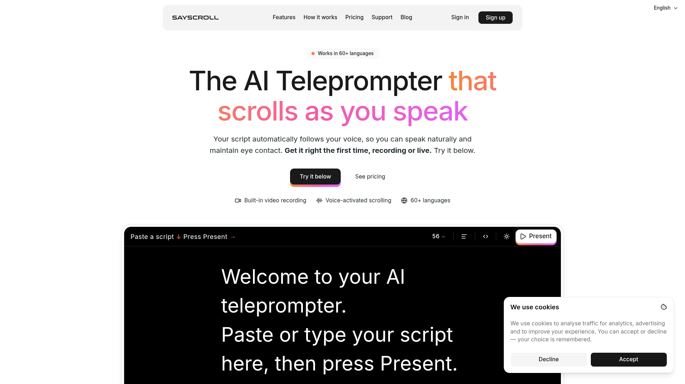
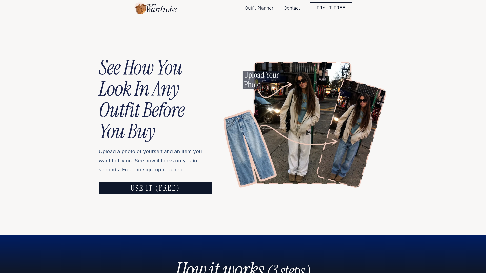
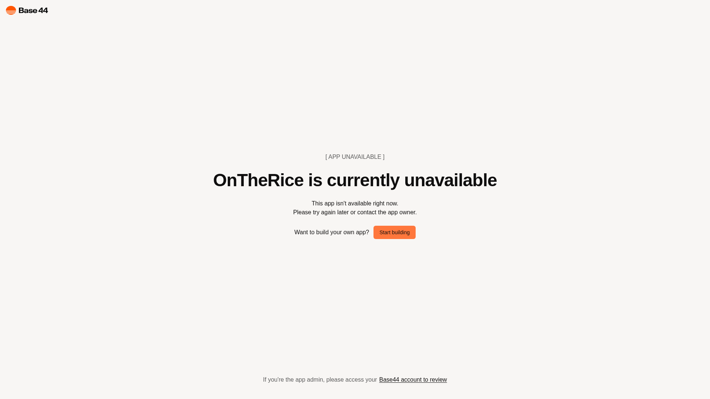

9月2日 周三
Radar by Particle（播客搜索引擎）
由前 Twitter 工程师创立的 Particle 推出的播客搜索引擎：已转录超过 13 万个播客（每天新增约 2 万集），支持按人物、品牌、关键词与语义全文检索播客内容，可追踪提及、提取带时间戳的高光片段，并支持设置提醒。底层由 Particle Podcast Intelligence API
Fotor 视频 Agent（Video Agent by Fotor）
用聊天创建与编辑精确动态图形和视频的 AI 工具：自动编排场景、节奏、视觉特效与动态文字，输出可编辑的多轨时间线——文字、数字、Logo、图表在渲染前都可随时修改，无需 After Effects。输入脚本或上传 PDF 即可生成，制作解说视频从 3-5 天缩短到约 40 分钟。

Sayscroll（AI 语音跟随提词器）
会「听你说话」的 AI 提词器：通过实时语音识别，你说到哪文字就滚动到哪，支持 60+ 种语言甚至同一段落中英混排；即兴发挥时自动等待，回到稿件时自动锁定位置。纯浏览器使用、无需安装，脚本不出本机，内置录屏可直接出片。

Ask My Wardrobe（AI 虚拟试衣衣橱）
AI 虚拟试衣与智能衣橱工具：上传自己的照片和想试穿的衣服，几秒内看到上身效果，免费且无需注册。还提供数字衣橱管理、每日穿搭规划（可同步日历）、穿搭分享给朋友征求意见等功能，帮助用户「买前先看到上身效果」。

OnTheRice（AI 市场情报）
面向金融与地缘政治的 AI 语义情报平台：用 8 个 AI 模型扫描全网信息，经「发现→验证→语义→仲裁→收敛→脉搏」六层流水线处理，输出带证据权重排序的买卖信号，8 项检查全部通过才下结论、否则明确标注「NO CALL」。公开记录每次预测的对错，所有输出均注明为研究用途而非投资建议。